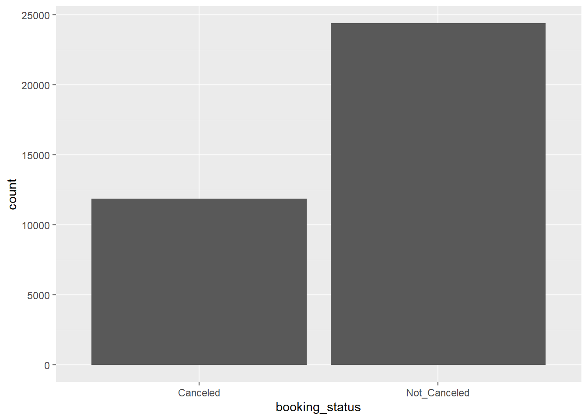
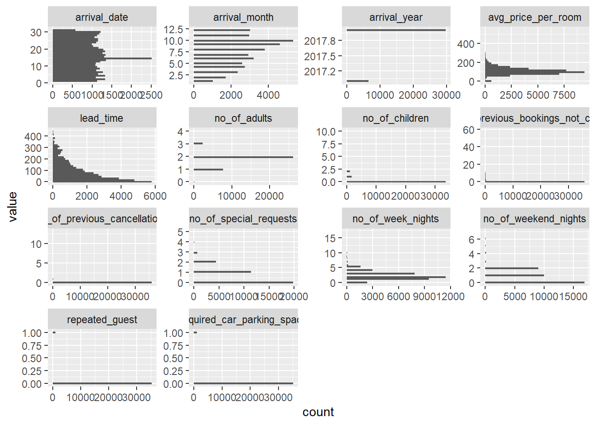
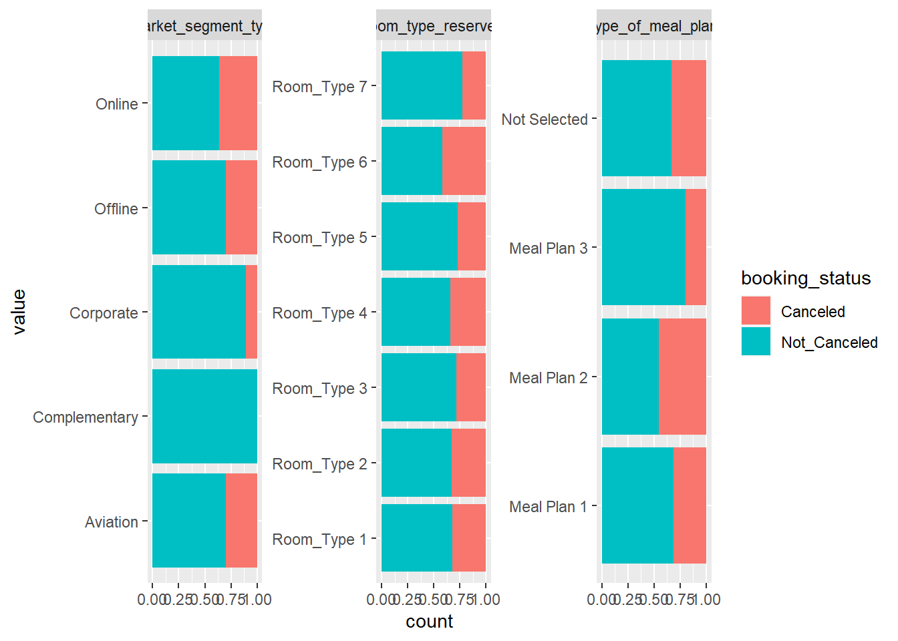
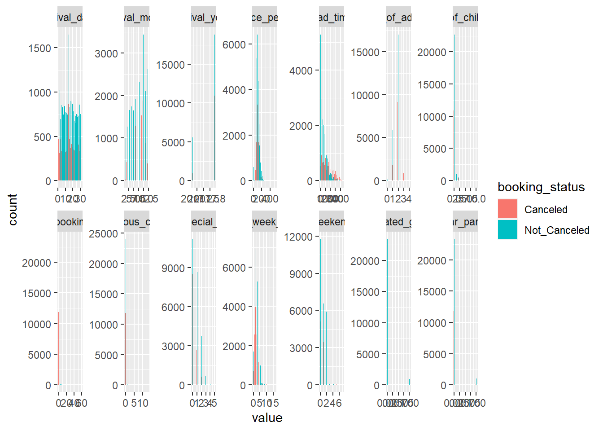

── Attaching core tidyverse packages ──────────────────────── tidyverse 2.0.0 ──
✔ dplyr 1.1.1 ✔ readr 2.1.4
✔ forcats 1.0.0 ✔ stringr 1.5.0
✔ ggplot2 3.4.1 ✔ tibble 3.2.1
✔ lubridate 1.9.2 ✔ tidyr 1.3.0
✔ purrr 1.0.1
── Conflicts ────────────────────────────────────────── tidyverse_conflicts() ──
✖ dplyr::filter() masks stats::filter()
✖ dplyr::lag() masks stats::lag()
ℹ Use the conflicted package (<http://conflicted.r-lib.org/>) to force all conflicts to become errors
library(caret)
Loading required package: lattice
Attaching package: 'caret'
The following object is masked from 'package:purrr':
lift
library(googledrive)library(GGally)
Registered S3 method overwritten by 'GGally':
method from
+.gg ggplot2
library(infer)
hotel =read_csv("Hotel Reservations.csv")
Rows: 36275 Columns: 19
── Column specification ────────────────────────────────────────────────────────
Delimiter: ","
chr (5): Booking_ID, type_of_meal_plan, room_type_reserved, market_segment_...
dbl (14): no_of_adults, no_of_children, no_of_weekend_nights, no_of_week_nig...
ℹ Use `spec()` to retrieve the full column specification for this data.
ℹ Specify the column types or set `show_col_types = FALSE` to quiet this message.
hotel |> skimr::skim()
Data summary
Name
hotel
Number of rows
36275
Number of columns
19
_______________________
Column type frequency:
character
5
numeric
14
________________________
Group variables
None
Variable type: character
skim_variable
n_missing
complete_rate
min
max
empty
n_unique
whitespace
Booking_ID
0
1
8
8
0
36275
0
type_of_meal_plan
0
1
11
12
0
4
0
room_type_reserved
0
1
11
11
0
7
0
market_segment_type
0
1
6
13
0
5
0
booking_status
0
1
8
12
0
2
0
Variable type: numeric
skim_variable
n_missing
complete_rate
mean
sd
p0
p25
p50
p75
p100
hist
no_of_adults
0
1
1.84
0.52
0
2.0
2.00
2
4
▁▂▇▁▁
no_of_children
0
1
0.11
0.40
0
0.0
0.00
0
10
▇▁▁▁▁
no_of_weekend_nights
0
1
0.81
0.87
0
0.0
1.00
2
7
▇▃▁▁▁
no_of_week_nights
0
1
2.20
1.41
0
1.0
2.00
3
17
▇▁▁▁▁
required_car_parking_space
0
1
0.03
0.17
0
0.0
0.00
0
1
▇▁▁▁▁
lead_time
0
1
85.23
85.93
0
17.0
57.00
126
443
▇▃▁▁▁
arrival_year
0
1
2017.82
0.38
2017
2018.0
2018.00
2018
2018
▂▁▁▁▇
arrival_month
0
1
7.42
3.07
1
5.0
8.00
10
12
▃▃▅▆▇
arrival_date
0
1
15.60
8.74
1
8.0
16.00
23
31
▇▇▇▆▆
repeated_guest
0
1
0.03
0.16
0
0.0
0.00
0
1
▇▁▁▁▁
no_of_previous_cancellations
0
1
0.02
0.37
0
0.0
0.00
0
13
▇▁▁▁▁
no_of_previous_bookings_not_canceled
0
1
0.15
1.75
0
0.0
0.00
0
58
▇▁▁▁▁
avg_price_per_room
0
1
103.42
35.09
0
80.3
99.45
120
540
▇▅▁▁▁
no_of_special_requests
0
1
0.62
0.79
0
0.0
0.00
1
5
▇▁▁▁▁
It appears as though there are not any missing values which is good, the next question is exploring the distributions of these variables.
We should probably start with our supervisor here, which I believe is booking status.
hotel |>ggplot(aes(x = booking_status)) +geom_bar()

It appears as though the majority were not canceled, though the classes are fairly balanced.
Let’s explore all of the categorical columns real quick
`stat_bin()` using `bins = 30`. Pick better value with `binwidth`.

Let’s go ahead and add the Booking status to study potential relationships with the features
hotel |>keep(is.character) |>select(-Booking_ID) |>pivot_longer(cols = type_of_meal_plan:market_segment_type,names_to ="columns") |>ggplot(aes(y = value, fill = booking_status)) +facet_wrap(~columns, scales ="free") +geom_bar(position ="fill")

There does appear to be some difference in proportions based off of the categorical. Complementary never seems to cancel whereas Onlien and Meal plan 2 seem to have the highest incidence of canceling.
hotel |>select(where(is.numeric), booking_status) |>pivot_longer(cols = no_of_adults:no_of_special_requests,names_to ="columns") |>ggplot(aes(x = value, fill = booking_status)) +facet_wrap(~columns, scales ="free", nrow =2) +geom_histogram(position ='dodge')
`stat_bin()` using `bins = 30`. Pick better value with `binwidth`.

It appears as though there really isn’t too much to differentiate them in terms continuous.
I want to do a t-test on each of these groups to help understand if there are significant differences between the different groups
hotel |>t_test(formula = avg_price_per_room ~ booking_status,alternative ="two-sided") |>mutate(variable ="avg_price_per_room")
Warning: The statistic is based on a difference or ratio; by default, for
difference-based statistics, the explanatory variable is subtracted in the
order "Canceled" - "Not_Canceled", or divided in the order "Canceled" /
"Not_Canceled" for ratio-based statistics. To specify this order yourself,
supply `order = c("Canceled", "Not_Canceled")`.
Warning: The statistic is based on a difference or ratio; by default, for
difference-based statistics, the explanatory variable is subtracted in the
order "Canceled" - "Not_Canceled", or divided in the order "Canceled" /
"Not_Canceled" for ratio-based statistics. To specify this order yourself,
supply `order = c("Canceled", "Not_Canceled")`.